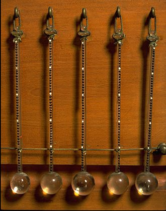

Medical Devices - A Computer Science Presentation
Presented and Made By:
Matias Suxo
ICS3U - Mr.kzebarth
Revolution
How Medical Devices have revolutionized the industry

Medical Devices have revolutionized humanity for hundreds of years, in fact their progression might be the reason you are alive today. In the 1800s, people would die from a common cold and that was not ethicle as you had a low survival rate. The main reason people dies was because sick patients could not get diagnosed of anything and if they did then it was normally too late and led to their demise. The thermometer was the first Device to revolutionise everything. On the right is a picture of the first ethicle and usable thermometer by Galileo Galei. Since then we have made many other advancements from chemotherapy to band aids we have many Medical Devices to protect us.
Nowadays, there are many ways to diagnose diseases and dysfunctions but also many ways to treat them. We can only expect more adveancement to come.